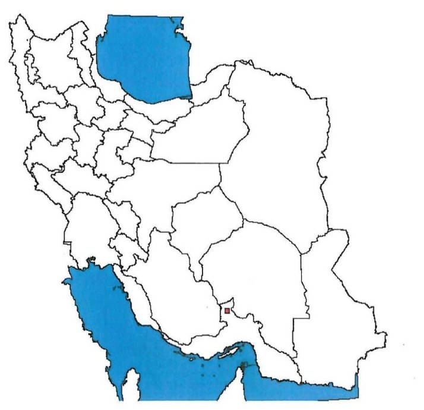
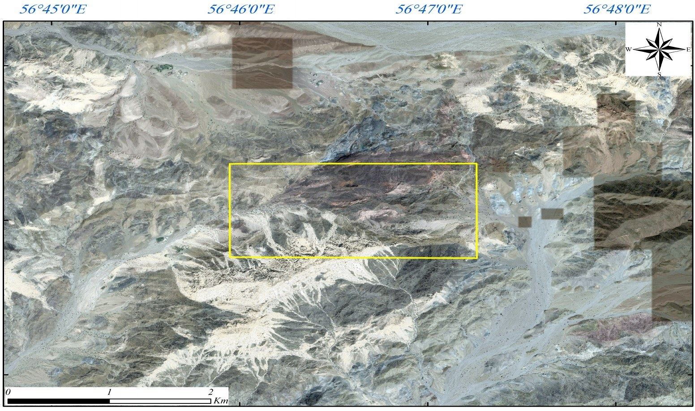
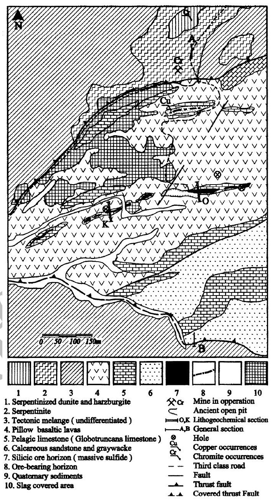
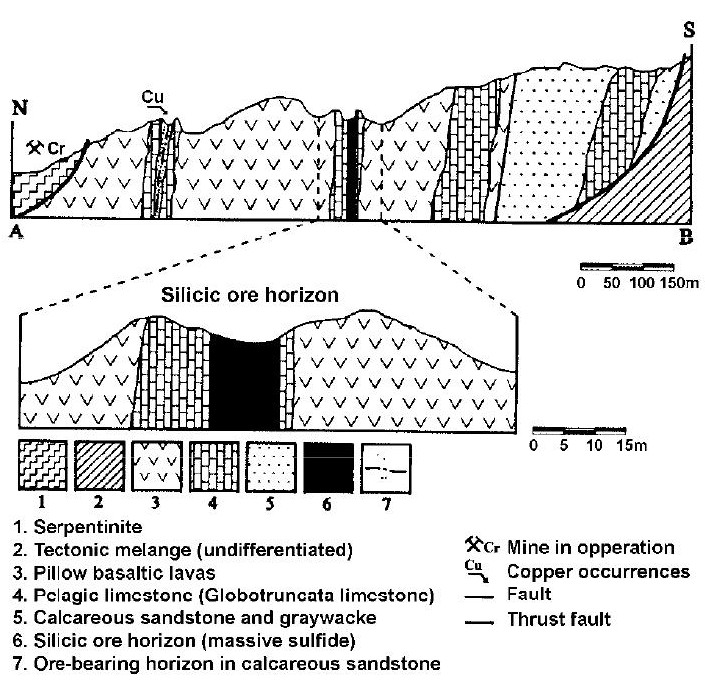
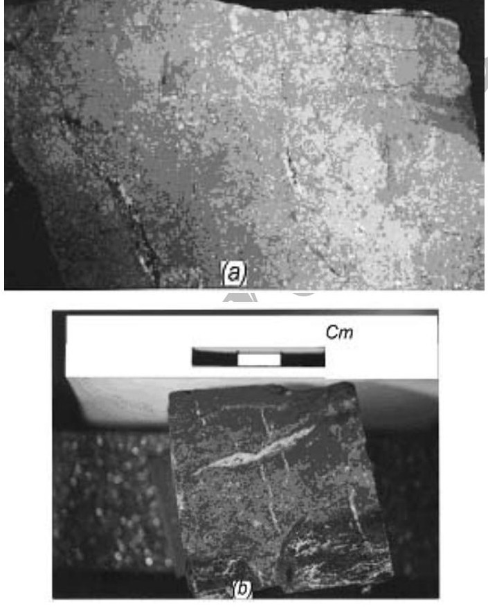
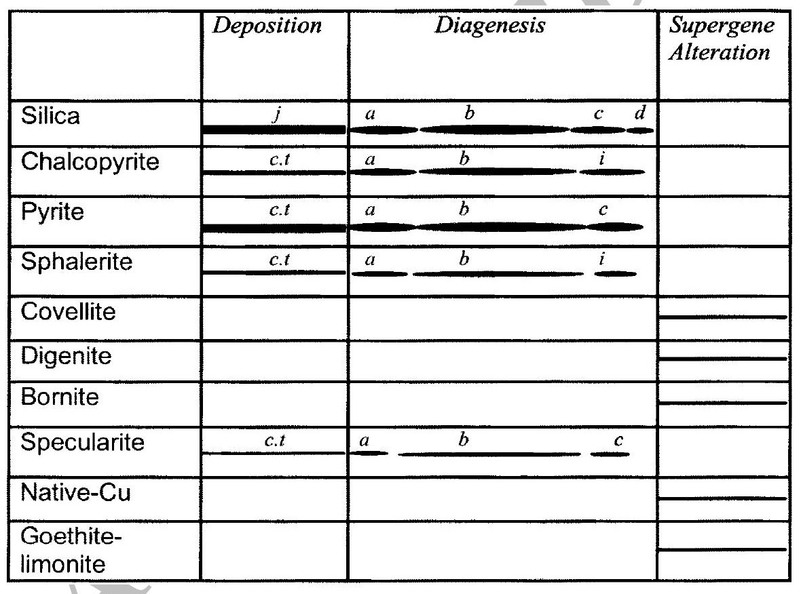
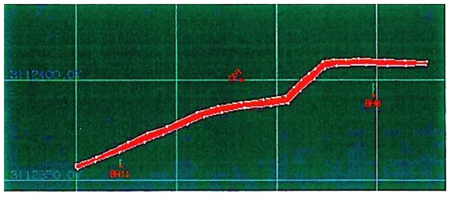
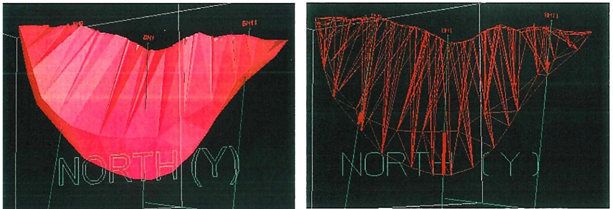
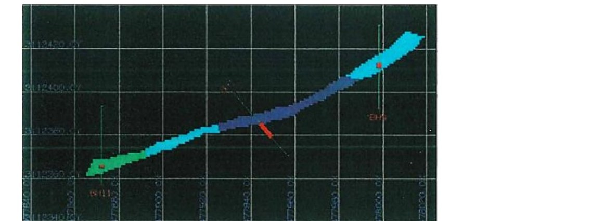

کانسار مس شیخعالی یک توده سولفیدی ماسیو از نوع VMS در جنوبشرق ایران است که در منابع علمی با نام Sheikh-Ali شناخته میشود. اکتشاف تفصیلی آن بین سالهای ۱۳۷۷ تا ۱۳۸۱ انجام شده و شامل نقشهٔ زمینشناسی، ژئوفیزیک IP–RS و ۱۶ گمانه است. مدلسازی سهبعدی و برآورد بلوکی در نرمافزار Gemcom حدود ۳۰۵٬۲۶۳ تن ماده معدنی با عیار متوسط ۵٫۲۹٪ مس و محتوای حدود ۱۶٬۱۴۸ تن مس فلزی نشان میدهد.
این عیار حدود هفت برابر عیار متوسط معدن سرچشمه (۰٫۷٪) است. مقالهٔ علمی ۲۰۰۲ بر پایهٔ نمونههای سطحی عیار پایینتری گزارش میکند (هشت نمونهٔ ماسیو: ۱٫۶۴ تا ۴٫۸۰٪ مس)، و طلا و نقره را هم در کانه نشان میدهد (۰٫۱۸ تا ۰٫۶۴ گرم طلا و ۱۰ تا ۷۵ گرم نقره در تن). یک بررسی زمینشناسی ایران، شیخعالی را تنها نمونهٔ این نوع سولفید تودهای غنی از طلا در بخش جنوبی پهنهٔ سنندج–سیرجان مینامد. در اکتشاف تفصیلی فقط مس تجزیه شده؛ پس تفاوت عیار مس و عیار طلا و نقره باید با آنالیز تازه روشن شود.
| شاخص | مقدار | توضیح |
|---|---|---|
| نوع کانسار | سولفید تودهای (VMS) مرتبط با ولکانیسم | مطالعات زمینشناسی محدوده |
| ارتفاع محدوده | حدود ۲٬۰۰۰ متر از سطح دریا | |
| نمونههای تجزیهشده | ۴۴ نمونه از BH1، BH5، BH9 و BH11 | تجزیهٔ عیار مس |
| دامنهٔ عیار نمونهها | ۰٫۶۱ تا ۱۱٫۷۸٪ مس | میانگین ≈ ۵٫۳۷٪ |
| حجم توده | ۶۵٬۶۴۸ مترمکعب | مدل بلوکی؛ مدل سهبعدی: ۶۵٬۷۱۴ |
| وزن مخصوص | ۴٫۶۵ تن بر مترمکعب | متوسط ماده معدنی |
| تناژ | ۳۰۵٬۲۶۳ تن | ۶۵٬۶۴۸ × ۴٫۶۵ |
| محتوای فلزی | ۱۶٬۱۴۸ تن مس | تناژ × ۵٫۲۹٪ |
کانسار در استان هرمزگان و در مختصات 28°09′00″N, 56°46′20″E قرار دارد.
| مرجع | فاصلهٔ تقریبی | جهت |
|---|---|---|
| کرمان | ۳۰۰ کیلومتر | جنوب |
| بندرعباس | ۱۵۰ کیلومتر | شمالشرق |
| دولتآباد | ۳۰ کیلومتر | جنوبشرق |
| روستای عشایری شیخعالی | ۲ کیلومتر | جنوبشرق |
مقالهٔ علمی (Rastad et al.، ۲۰۰۲) موقعیت را حدود ۳۰۰ کیلومتر جنوبشرق کرمان، ۱۵۰ کیلومتر جنوبشرق بافت و ۱۳۰ کیلومتر شرق حاجیآباد میداند.
راههای دسترسی:
منطقه از نظر امکانات رفاهی و صنعتی محروم است و جمعیت آن را بیشتر عشایر تشکیل میدهند.


کانسار از تیپ سولفید تودهای آتشفشانی است و با واحدهای ولکانیکی منطقه ارتباط مستقیم دارد. نقشهٔ توپوگرافی–زمینشناسی محدودهای حدود ۲ کیلومترمربع تهیه شده است. در محدوده سه واحد اصلی دیده میشود:
| واحد | شرح |
|---|---|
| بازالتهای اسپیلیتی | بازالت اسپیلیتی تیره، بازالت کلریتی، بازالتهای شدیداً کلریتیشده و مواد هیالوکلاستیک |
| آهکهای پلاژیک | آهک پلاژیک صورتی تا قرمز و کرمرنگ |
| رادیولاریت چرتی و شیل سیلیسی | رادیولاریت چرتی و شیل سیلیسی قرمز تا قهوهای، حاوی ماده معدنی |
بخش اعظم ماده معدنی در افقی از رادیولاریت چرتی قرار دارد که با کنتاکت گدازههای بالشی و آهکهای پلاژیک مرتبط است. این افق بهصورت نواری منقطع و عدسیشکل در محل ترانشهٔ اصلی رخنمون دارد و ضخامتش حدود ۱۰ تا ۳۰ متر تغییر میکند. در نمونهبرداری گمانهها، ماده معدنی بهصورت ماسیو، پراکنده و رگهای (stockwork) و نیز زون اکسیداسیون ثبت شده است. در BH5 و BH10 فواصلی با عنوان «حفره» (Cave) ثبت شده است.
گزارش اکتشاف با مقالهٔ راستاد، منظمی میرعلیپور و مؤمنزاده (۲۰۰۲، ژورنال علوم جمهوری اسلامی ایران، شمارهٔ ۱۳: ۵۱–۶۳) سنجیده شد. این مقاله پژوهشی دانشگاهی دربارهٔ زمینشناسی، کانیشناسی و ژئوشیمی همین کانسار است. یکی از نویسندگان آن در مقالهٔ برآورد ذخیرهٔ ۲۰۱۰ هم نام برده شده، پس استقلال کامل دو منبع قطعی نیست.
| موضوع | یافتهٔ مقاله |
|---|---|
| نوع کانسار | سولفید تودهای آتشفشانیزاد از نوع قبرس، میزبانشده در افیولیت؛ نویسندگان آن را به «افیولیت رسوبدار» (sedimented ophiolite) شبیهتر میدانند، مانند کانسار Anayatak ترکیه |
| سنگ میزبان | گدازهٔ بالشی بازالتی، دیاباز، آهک پلاژیک (کرتاسهٔ بالایی، ماستریشتین)، چرت رادیولاریتی، ماسهسنگ آهکی و گریواک؛ بازالتها از نوع E-MORB تولئیتی |
| شکل ماده معدنی | عدسیهای ناپیوستهٔ سولفید ماسیو همشیب با لایهبندی آهک پلاژیک؛ افق سیلیسی حدود ۵۵۰ متر طول |
| کانیشناسی | پیریت و کالکوپیریت (اصلی)، اسفالریت (فرعی)، اسپکولاریت؛ کوولیت، دیژنیت، بورنیت و مس طبیعی در زون برونزاد؛ در سطح گوتیت، مالاکیت و آزوریت. بافت: ماسیو، لایهای و کلوفرم |
| دگرسانی و ژئوشیمی | دگرسانی کلریتی و پروپیلیتی (سریسیتی کم)؛ همبستگی بسیار خوب Cu و Zn؛ نسبت Cu/(Cu+Zn) در نمونههای ماسیو ۰٫۷۶ تا ۱٫۰۰ است، یعنی مس فلز اصلی است |
| معدنکاری باستانی | سربارههای مس نشانهٔ استخراج باستانی در محدودهٔ شیخعالی و احمدآباد است (امامی و پرورش، ۲۰۱۶) |
نمونههای سطحی و برشهای لیتوژئوشیمیایی (جدول ۲ مقاله):
| نوع نمونه | تعداد | مس | طلا (ppb) | نقره (ppm) |
|---|---|---|---|---|
| ماده معدنی ماسیو | ۸ | ۱٫۶۴ تا ۴٫۸۰٪ | ۱۸۰ تا ۶۴۰ | ۱۰ تا ۷۵ |
| ماده معدنی پراکنده | ۵ | ۰٫۱۷ تا ۰٫۸۵٪ | ۱۲۲ تا ۳۰۱ | ۹ تا ۲۵ |
| بازالت میزبان | ۷ | ۱۷۲ تا ۵۷۸ ppm | ۸ تا ۷۲ | ۲ تا ۵ |
عیار نمونههای حفاری (تا ۱۱٫۷۸٪ مس) بسیار بالاتر از نمونههای سطحی این مقاله است. احتمالاً مقاله بر نمونههای سطحی و برشهای لیتوژئوشیمیایی و گزارش اکتشاف بر مغزهٔ حفاری تکیه دارد، ولی این توجیه تأیید نشده و تیم اکتشاف باید دو مجموعه را با هم تطبیق دهد. طلا و نقره در ماده معدنی ماسیو حضور دارند اما نمونهها برای ارزشگذاری کافی نیستند و در برآورد ذخیره نیامدهاند. آنالیز USGS پتانسیل پالادیم، پلاتین و رودیم را پایین ارزیابی کرده است.
پتانسیل اکتشافی نزدیک (فقط نشانه، نه ذخیره): مقاله از چند رخداد دیگر در همین مجموعهٔ افیولیتی نام میبرد: معدن متروک احمدآباد و نشانههای مس بقچنار، ماهستان، دهانهکوجین و رزدار. اینها در گزارش اکتشاف بررسی نشدهاند.




اکتشاف تفصیلی بین سالهای ۱۳۷۷ تا ۱۳۸۱ سه بخش داشت: تهیهٔ نقشهٔ توپوگرافی–زمینشناسی (حدود ۲ کیلومترمربع)، اکتشاف سطحی برای شناخت گسترش ماده معدنی سولفیدی در عمق، و برداشت ژئوفیزیک IP–RS. بر پایهٔ تلفیق این نتایج، ۱۶ گمانه با طول کل حدود ۲٬۶۷۵ متر حفاری شد. گمانهها عمدتاً شیبدار (۷۰ تا ۸۷ درجه) هستند.
| گمانه | X (شرقی) | Y (شمالی) | ارتفاع دهانه (م) | طول (م) |
|---|---|---|---|---|
| BH1 | ۴۷۷٬۹۳۱٫۸ | ۳٬۱۱۲٬۴۰۰ | ۱۹۰۲٫۰۰ | ۱۴۰ |
| BH2 | ۴۷۷٬۹۳۶٫۱ | ۳٬۱۱۲٬۳۸۶ | ۱۹۰۲٫۱۷ | ۱۶۴ |
| BH3 | ۴۷۸٬۰۹۵٫۲ | ۳٬۱۱۲٬۴۶۰ | ۱۹۲۸٫۳۵ | ۱۷۰ |
| BH4 | ۴۷۷٬۹۰۵٫۳ | ۳٬۱۱۲٬۴۱۶ | ۱۸۹۶٫۳۴ | ۲۳۰ |
| BH5 | ۴۷۸٬۰۷۱ | ۳٬۱۱۲٬۴۴۵ | ۱۹۱۸٫۰۴ | ۸۵ |
| BH6 | ۴۷۸٬۰۱۷ | ۳٬۱۱۲٬۴۴۵ | ۱۹۱۳٫۴۳ | ۱۸۶ |
| BH7 | ۴۷۸٬۰۷۱ | ۳٬۱۱۲٬۴۶۰ | ۱۹۱۶٫۱۱ | ۱۹۱ |
| BH8 | ۴۷۷٬۹۸۸ | ۳٬۱۱۲٬۴۴۰ | ۱۹۱۵٫۰۰ | ۱۶۶ |
| BH9 | ۴۷۷٬۹۵۲ | ۳٬۱۱۲٬۳۹۲ | ۱۹۱۰٫۰۰ | ۱۵۰ |
| BH10 | ۴۷۸٬۰۷۰٫۴ | ۳٬۱۱۲٬۳۸۹ | ۱۹۲۸٫۴۷ | ۹۵ |
| BH11 | ۴۷۷٬۸۷۲ | ۳٬۱۱۲٬۳۵۷ | ۱۹۱۴٫۰۰ | ۱۵۰ |
| BH12 | ۴۷۷٬۸۲۲٫۸ | ۳٬۱۱۲٬۵۶۰ | ۱۸۸۷٫۵۰ | ۲۱۰ |
| BH13 | ۴۷۷٬۹۰۵٫۳ | ۳٬۱۱۲٬۲۹۶ | ۱۹۰۳٫۹۴ | ۲۳۷ |
| BH14 | ۴۷۷٬۸۷۱ | ۳٬۱۱۲٬۳۴۸ | ۱۹۱۵٫۷۰ | ۱۳۵ |
| BH15 | ۴۷۸٬۰۷۱ | ۳٬۱۱۲٬۳۳۰ | ۱۹۲۱٫۷۱ | ۲۱۰ |
| BH16 | ۴۷۷٬۹۰۵٫۳ | ۳٬۱۱۲٬۴۵۲ | ۱۹۰۴٫۰۰ | ۱۵۸٫۵ |
ماده معدنی در چهار گمانه نمونهبرداری و از نظر مس تجزیه شده است. طولهای زیر طول نمونهبرداری در امتداد گمانه است، نه ضخامت واقعی.
| گمانه | بازهٔ ماده معدنی در گمانه (م) | طول نمونهبرداریشده (م) | تعداد نمونه |
|---|---|---|---|
| BH1 | ۶۹ تا ۹۹ | حدود ۳۰ | ۲۸ |
| BH5 | ۶۰ تا ۶۲ | ۲ | ۱ |
| BH9 | حدود ۷۳٫۵ تا ۸۳٫۵ | حدود ۱۰ | ۱۰ |
| BH11 | ۳۲ تا ۳۷ | ۵ | ۵ |
| جمع | ۴۴ |
دادهها (دهانه، پیمایش، لیتولوژی و عیار) در چهار فایل ساختاریافته وارد Gemcom شده است. نتیجهٔ ۱۲ گمانهٔ دیگر (برخورد یا عدم برخورد با ماده معدنی) در گزارش اکتشاف صریحاً ذکر نشده و باید روشن شود.
مدل سهبعدی توده از یک پلان افقی (نقشهٔ زمینشناسی سطحی) و یک مقطع شیبدار از گمانههای BH1، BH9 و BH11 ساخته شده است؛ نتیجه جسمی کاسهایشکل است که از سطح به عمق میرود. مراحل: ساخت مدل توپوگرافی (شبکهٔ مثلثی نامنظم)، مدلسازی گمانهها و لیتولوژی، ترسیم پلان و مقطع، و اتصال مقاطع برای ساخت مدل سهبعدی.


| مشخصهٔ مدل | مقدار |
|---|---|
| حجم مدل سهبعدی | ۶۵٬۷۱۴ مترمکعب |
| مساحت سطح | ۲۹٬۴۴۶ مترمربع |
| گرهها / لبهها / مثلثها | ۱۶۴ / ۴۸۶ / ۳۲۴ |
| تناژ از حجم مدل سهبعدی | ≈ ۳۰۵٬۵۶۵ تن |
برای برآورد عیار، توده به بلوکهای ۱×۱×۱ متری تقسیم و عیار هر بلوک با روش عکس مجذور فاصله (توان ۲) تخمین زده شد. روش زمینآماری به این دلیل کنار گذاشته شد که تغییرنما ساختار فضایی نشان نداد (بخش ۶).
| پارامتر | مقدار |
|---|---|
| فضای تخمین | ۱۹۰ ستون، ۱۲۰ ردیف، ۱۳۰ تراز (مبدأ: X=۴۷۷٬۸۳۵، Y=۳٬۱۱۲٬۳۳۹، Z=۱٬۹۲۰) |
| حداقل / حداکثر نمونهٔ مؤثر در هر بلوک | ۲ / ۱۲ |
| بیضی جستجو | بدون چرخش، شعاع نامحدود (۹٬۹۹۹) |
| نتیجهٔ برآورد | مقدار |
|---|---|
| تعداد بلوک (هر بلوک ۱ مترمکعب) | ۶۵٬۶۴۸، همه تخمینخورده |
| تناژ = ۶۵٬۶۴۸ × ۴٫۶۵ | ۳۰۵٬۲۶۳ تن |
| عیار متوسط بلوکها | ۵٫۲۹٪ مس (میانگین نمونهها ۵٫۳۷٪) |
| محتوای فلزی = ۳۰۵٬۲۶۳ × ۵٫۲۹٪ | ۱۶٬۱۴۸ تن مس |
| مس قابل استحصال با بازیابی فرضی ۷۵٪ (آزمایش فرآوری انجام نشده) | ۱۲٬۱۱۱ تن مس |

اعتبارسنجی متقابل: برای تنظیم پارامترها (شعاع، حداقل و حداکثر نمونه) آزمون اعتبار متقابل روی ۴۴ نمونه انجام شد. میانگین عیار برآوردشده در محل نمونهها ۵٫۳۵٪ است و با میانگین واقعی (۵٫۳۷٪) نزدیک است؛ یعنی مدل میانگین را بیش یا کم برآورد نمیکند. این آزمون درستی توزیع عیار در مناطق بدون حفاری را تضمین نمیکند.
عیار مس نمونهها از ۰٫۶۱ تا ۱۱٫۷۸٪ تغییر میکند و میانگین آن ۵٫۳۸٪ است. ضریب تغییرات ۰٫۶۳ تغییرپذیری متوسط را نشان میدهد. حدود ۴۶٫۵٪ نمونهها زیر ۴٫۳۳٪ و ۷۲٪ زیر ۸٫۰۵٪ مس هستند.
| پارامتر | تعداد | کمینه | بیشینه | میانگین | انحراف معیار | ضریب تغییرات | چولگی | کشیدگی |
|---|---|---|---|---|---|---|---|---|
| عیار مس (٪) | ۴۳ | ۰٫۶۱ | ۱۱٫۷۸ | ۵٫۳۸ | ۳٫۴۱ | ۰٫۶۳ | ۰٫۲۷ | ۱٫۶۵ |
تغییرنما در همهٔ جهتها مشابه است، پس ذخیره همسانگرد فرض شده است. اما پس از اوج حدود ۱۱٫۷ در فاصلهٔ ۱۰ تا ۱۵ متر دوباره کاهش مییابد و به حد ثابتی نمیرسد. گزارش اکتشاف نتیجه میگیرد ساختار فضایی قابلاتکایی دیده نمیشود و کریجینگ مناسب نیست. باید توجه داشت که ۲۸ نمونه از ۴۴ نمونه از یک گمانه (BH1) است و جفتهای نزدیک بیشتر از درون همان گمانه میآیند.
شعاع جستجو: با کوچکتر شدن شعاع، بلوکهای کمتری تخمین میخورند. در شعاع ۵۰ متر فقط حدود نیمی از حجم مدل شرط حداقل دو نمونه را دارد و عیار متوسط این بخش بالاتر است (۸٫۵۷٪). یعنی بخش بزرگی از مدل با فاصلهٔ زیاد از نمونهها و بهصورت برونیابی تخمین زده شده است.
| شعاع جستجو | حجم بلوکهای تخمینخورده (م³) | سهم از کل مدل | عیار متوسط (٪ Cu) |
|---|---|---|---|
| ۵۰ متر | ۳۲٬۷۰۲ | ۴۹٫۸٪ | ۸٫۵۷ |
| ۱۰۰ متر | ۶۱٬۰۶۰ | ۹۳٫۰٪ | نیاز به بازمحاسبه |
| بدون محدودیت | ۶۵٬۶۴۸ | ۱۰۰٪ | ۵٫۲۹ |
عیار حد و محتوای فلزی: گزارش اکتشاف میانگین عیار بلوکهای بالاتر از هر عیار حد را داده (از ۵٫۲۹٪ در حد ۰٫۵٪ تا ۱۰٫۶۱٪ در حد ۱۰٪)، ولی محتوای فلزی هر رده را از ضرب کل تناژ در عیار آن رده حساب کرده است. به همین دلیل با بالا رفتن عیار حد از ۱۶٬۱۰۰ به حدود ۳۲٬۰۰۰ تن مس میرسد، که ممکن نیست. آن عددها در این گزارش نیامدهاند. جدول دقیق تناژ–عیار فقط از خود مدل بلوکی به دست میآید؛ اما با همان میانگینهای گزارش، بازهٔ ریاضیِ درست قابل حساب است:
| عیار حد (٪ Cu) | میانگین عیار بالای حد (٪) | تناژ بالای حد (هزار تن) | مس محتوا بالای حد (تن) | مس قابل استحصال، بازیابی ۷۵٪ (تن) |
|---|---|---|---|---|
| ۰٫۵ | ۵٫۲۹ | ۳۰۵٫۳ | ۱۶٬۱۴۸ | ۱۲٬۱۱۱ |
| ۱ | ۵٫۸۱ | ۲۷۲ تا ۲۷۵ | ۱۵٬۸۱۸ تا ۱۵٬۹۶۲ | ۱۱٬۸۶۴ تا ۱۱٬۹۷۲ |
| ۲ | ۶٫۱۵ | ۲۴۲ تا ۲۵۸ | ۱۴٬۸۸۳ تا ۱۵٬۸۵۹ | ۱۱٬۱۶۲ تا ۱۱٬۸۹۵ |
| ۳ | ۷٫۱۶ | ۱۶۸ تا ۲۱۸ | ۱۲٬۰۳۲ تا ۱۵٬۶۱۷ | ۹٬۰۲۴ تا ۱۱٬۷۱۳ |
| ۴ | ۷٫۴۰ | ۱۱۶ تا ۲۱۰ | ۸٬۵۷۱ تا ۱۵٬۵۷۰ | ۶٬۴۲۸ تا ۱۱٬۶۷۷ |
| ۵ | ۸٫۸۳ | ۲۳ تا ۱۷۴ | ۲٬۰۴۱ تا ۱۵٬۳۴۶ | ۱٬۵۳۱ تا ۱۱٬۵۱۰ |
| حدود ۴٫۴ (سناریوی استخراج انتخابی) | ۷٫۹۴ | ۷۸ تا ۱۹۵ | ۶٬۲۰۸ تا ۱۵٬۴۷۵ | ۴٬۶۵۶ تا ۱۱٬۶۰۶ |
روش: اگر f سهم تناژ بالای حد، m میانگین عیار بالای حد و b میانگین عیار بلوکهای زیر حد باشد، 5.29 = f·m + (1−f)·b. چون b کمتر از عیار حد و (در روش عکس مجذور فاصله) بیشتر از کمترین نمونه (۰٫۶۱٪) است، f و محتوای فلزی در یک بازه میافتند. برای عیار حد ۶٪ و بیشتر، این بازه آنقدر پهن میشود که اطلاعاتی نمیدهد. این بازه جایگزین جدول مدل بلوکی نیست.
سناریوی استخراج انتخابی: نتیجهگیری گزارش اکتشاف از عیار متوسط ۷٫۹۴٪ (۵۰٪ بالاتر از ۵٫۲۹٪) یاد میکند. این عیار با عیار حد حدود ۴٫۴٪ (درونیابی خطی جدول بالا) برابر است. در آن حد فقط بخشی از توده (حدود ۷۸ تا ۱۹۵ هزار تن) استخراج میشود و مس قابل استحصال با بازیابی ۷۵٪ حداکثر حدود ۱۱٬۶۰۰ تن است؛ یعنی عیار بالاتر به قیمت تناژ و فلز کمتر به دست میآید. فلز محتوای ۲۸٬۱۰۰ تن در گزارش اکتشاف با این جدول سازگار نیست و در این گزارش نیامده است.
| محدودیت | راه کاهش / اقدام |
|---|---|
| پایهٔ داده: ۴۴ نمونه از چهار گمانه؛ ۲۸ نمونه از BH1؛ نتیجهٔ ۱۲ گمانهٔ دیگر ذکر نشده | مستندسازی نتیجهٔ همهٔ گمانهها؛ حفاری تکمیلی برای کاهش فاصلهٔ نمونهها |
| برآورد با کد استاندارد (JORC، PERC و مانند آن) طبقهبندی نشده | طبقهبندی منابع توسط شخص صالح |
| تغییرنما ساختار نشان نمیدهد؛ شعاع جستجو نامحدود؛ حدود نیمی از مدل برونیابی است | بازبرآورد با شعاع محدود؛ اعتبار برآورد برای کل توده سنجیده شود نه هر بلوک |
| جدول تناژ–عیار با عیار حد اقتصادی ندارد | بازمحاسبه از مدل بلوکی |
| وزن مخصوص ۴٫۶۵ بدون ذکر روش اندازهگیری | اندازهگیری مستقل و کنترل کیفیت نمونهبرداری و تجزیه |
| دادهها قدیمی است (حفاری ۱۳۷۷ تا ۱۳۸۱) | نمونهبرداری و آنالیز تازه |
| ارقام اکتشاف از گزارش اکتشاف گرفته شده و با داده خام آزمایشگاه یا خروجی نرمافزار تطبیق داده نشده است | بازبینی مستقل توسط خریدار یا کارشناس صالح |
| «حفره» در BH5 و BH10 | بررسی بازیابی نمونه و زمینشناسی مهندسی |
| فرآوری، روش استخراج، هزینه و پروانه در گزارش اکتشاف نیست | آزمایش فرآوری؛ مطالعات امکانسنجی؛ ارائهٔ پروانه |
| عیار مس گمانهها (تا ۱۱٫۷۸٪) بسیار بالاتر از نمونههای سطحی مقالهٔ علمی (۱٫۶۴ تا ۴٫۸٪) | تطبیق دو مجموعه با نمونهبرداری مستقل از سطح و مغزه |
| طلا و نقره در اکتشاف تجزیه نشده (فقط ۸ نمونهٔ مقاله) | آنالیز طلا، نقره و روی روی مغزهها |
| میراث فرهنگی (آثار معدنکاری باستانی) | استعلام رسمی و مستندسازی آثار |
| زهاب اسیدی از کانهٔ پرپیریت؛ نوسان قیمت مس و ارز | طرح مدیریت پساب؛ ارزشگذاری با چند سناریو |
جدول کامل نتایج تجزیهٔ ۴۴ نمونه، لاگ لیتولوژی گمانهها و جدول پیمایش (شیب و آزیموت) در گزارش اکتشاف موجود است و پس از امضای تعهد محرمانگی به خریدار داده میشود.